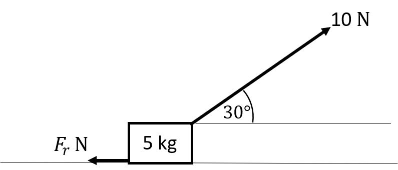
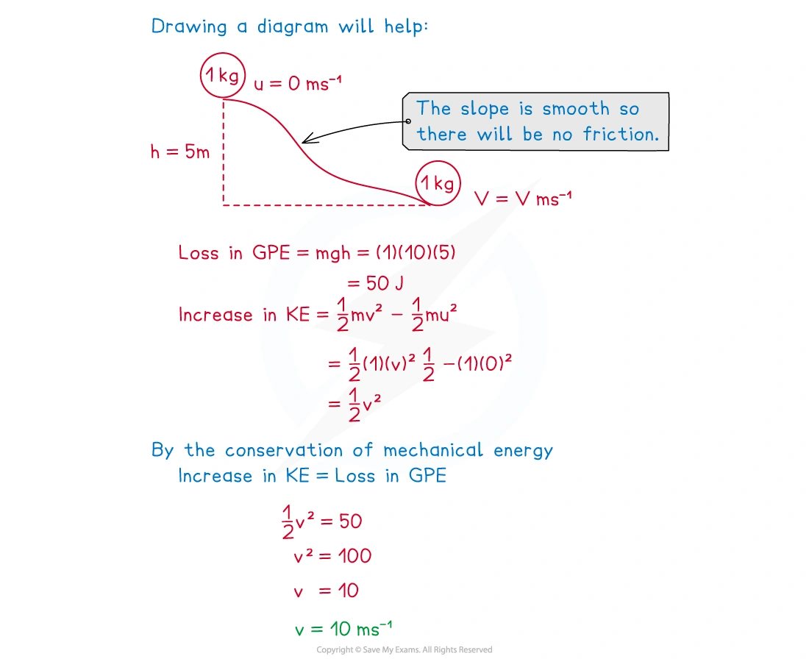
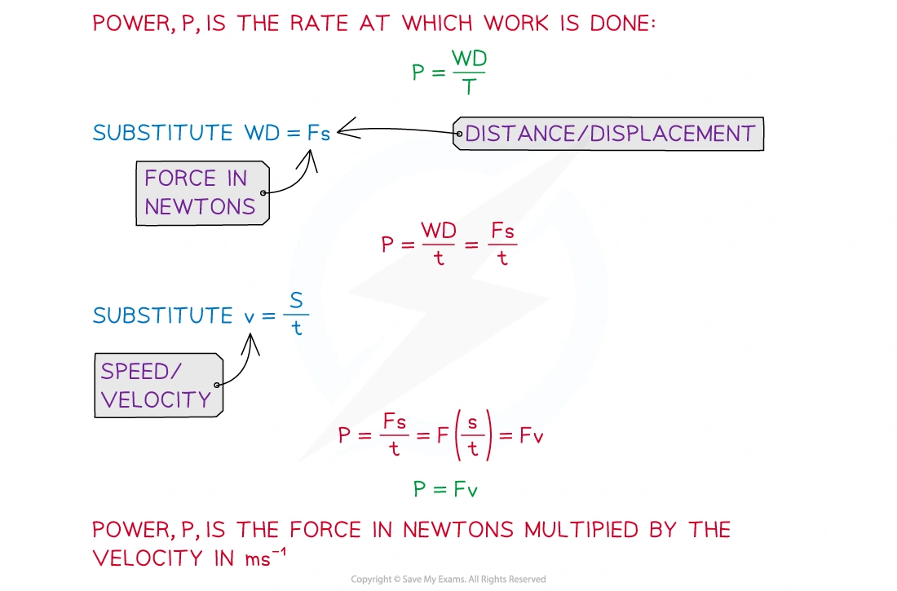
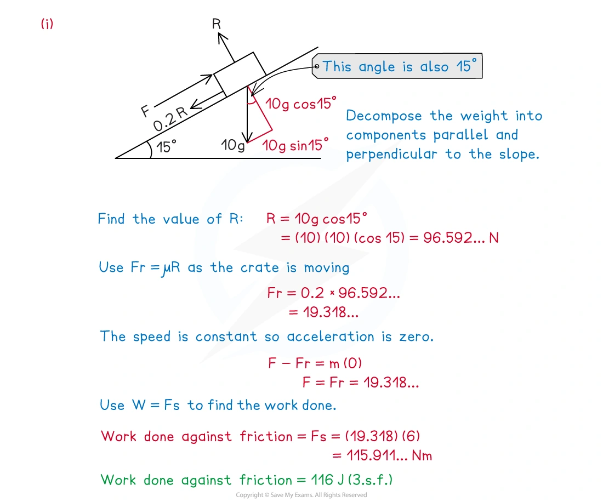
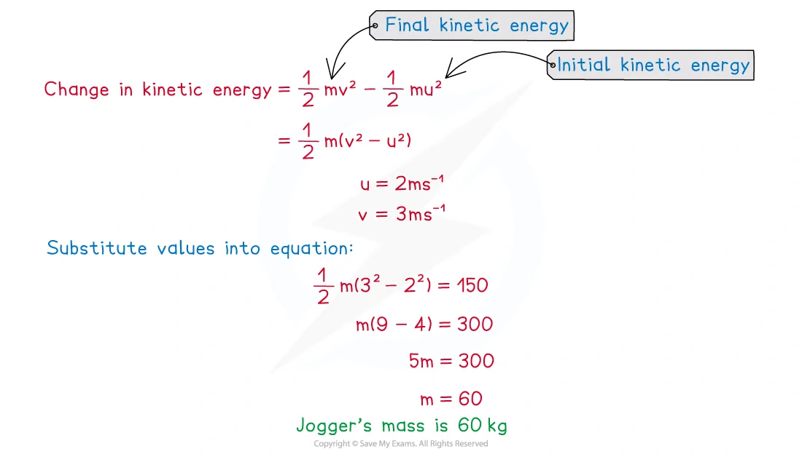
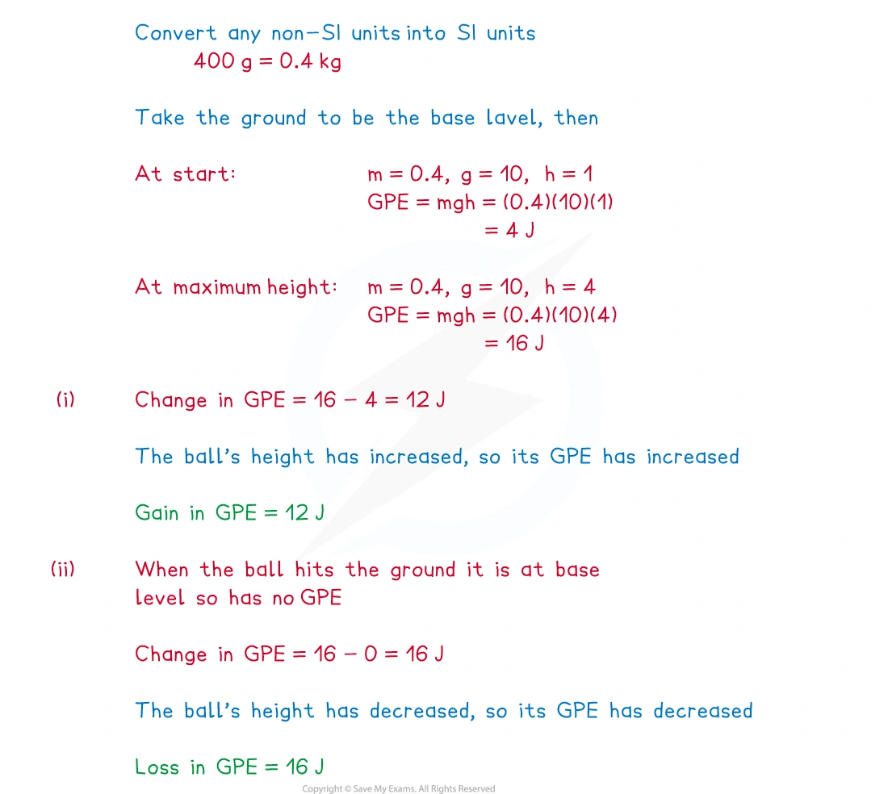
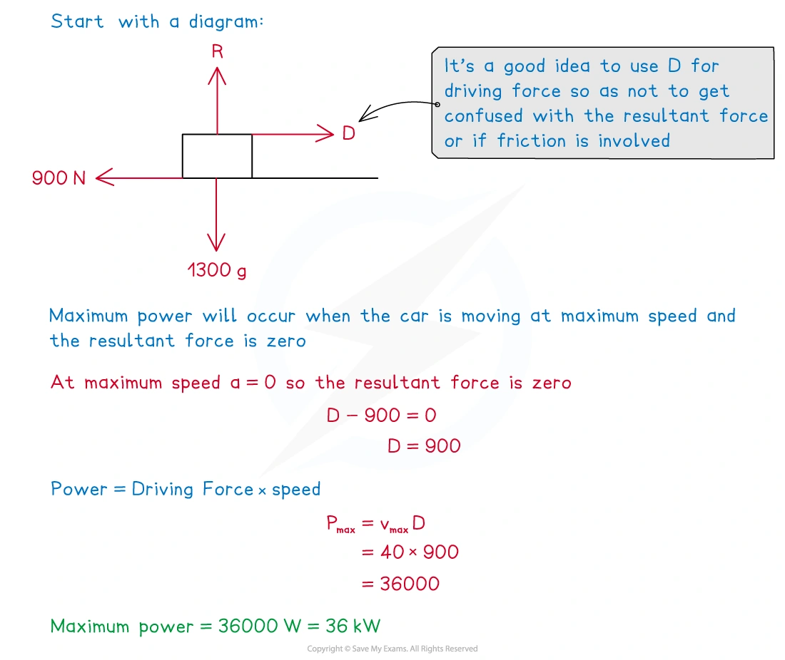

5. Energy, work and power
Work · kinetic energy · gravitational potential energy · power
本页依据 9709 Mathematics 2026–2027 syllabus 4.5，覆盖：
- use the relation work done =F s when the force and displacement are in the same direction;
- use the relation work done =F s\cos\theta when the force and displacement are at an angle;
- use kinetic energy \frac12mv^2 and gravitational potential energy mgh;
- use conservation of energy and the work–energy principle;
- use power P=\dfrac{W}{t} and P=Fv;
- solve problems involving motion on horizontal and inclined planes, resistance and maximum speed.
题目部分只保留可由本地原始 QP 与对应 mark scheme 核对的完整真题，不改写题目或补造小问。
Learning objectives
1. Core knowledge
Work done by a force
若大小为 F 的力使物体沿力的方向移动距离 s，则
W=Fs.
若力与 displacement 的夹角为 \theta，只有沿运动方向的分量做功：
W=Fs\cos\theta.
Work 是 scalar quantity，单位为 joule：1\,\mathrm J=1\,\mathrm{N\,m}。垂直于 displacement 的力不做功；resistance/friction 对运动做负功，通常把克服阻力所需的正数写成 “work done against resistance”。

在恒速运动中，沿运动方向的 resultant force 为零；因此 driving force 的 work 会平衡 resistance 的 work，并且如果物体上升，还要增加 GPE。
Kinetic energy and the work–energy principle
质量为 m、速度为 v 的 particle 的 kinetic energy 为
\mathrm{KE}=\frac12mv^2.
Resultant work 等于 kinetic energy 的改变：
W_{\rm resultant}=\Delta\mathrm{KE} =\frac12mv^2-\frac12mu^2.
当有多个外力时，把每个力的 work 带上符号相加。若题目说 “work done against resistance”，这是一个正的能量损失项，在方程右侧作为 loss 扣除。
Gravitational potential energy
相对于选定的 reference level，高度改变 h 时：
\mathrm{GPE}=mgh.
上升增加 GPE，下降减少 GPE。斜面上沿 line of greatest slope 移动距离 s、斜角为 \theta 时，竖直高度改变为 s\sin\theta，所以
\Delta\mathrm{GPE}=mg s\sin\theta.

Conservation of mechanical energy
只有 gravity 对 particle 做 work，或其他 external forces 不做 work 时，mechanical energy 守恒：
\mathrm{KE}_1+\mathrm{GPE}_1 =\mathrm{KE}_2+\mathrm{GPE}_2.
在 smooth plane 上没有 friction；在 rough plane 上必须加入 friction work。若有 driving force、resistance 或 air resistance，使用完整能量平衡，不要直接套 mechanical-energy conservation。
Work–energy principle
更一般地，所有 external forces 的总 work 等于 kinetic energy 的改变：
W_{\rm driving}-W_{\rm resistance}-\Delta\mathrm{GPE} =\Delta\mathrm{KE}
（这里假设 driving force 沿运动方向，且物体向上运动）。也可以等价地写成
W_{\rm driving} =\Delta\mathrm{KE}+\Delta\mathrm{GPE}+W_{\rm resistance}.
Power
Power 是 work done 的 rate：
P=\frac{W}{t}.
当 driving force F 与 velocity v 同方向时：
P=Fv.
单位为 watt：1\,\mathrm W=1\,\mathrm{J\,s^{-1}}，1\,\mathrm{kW}=1000\,\mathrm W。若 vehicle 以 maximum speed 在水平路面行驶，a=0，所以 driving force 等于 resistance；maximum power 可以用 P_{\max}=F_{\rm resistance}v_{\max} 求出。

2. Note worked examples
每个 Note worked example 单独成卡片，图片只在对应知识点需要时添加，不把多张图堆在同一张卡片中。
Worked example 1 · Work against friction on a horizontal surface
A child pulls a box of mass 5\,\mathrm{kg} along a rough horizontal surface at a constant speed by a force of magnitude 10\,\mathrm N inclined at 30^\circ to the horizontal. The only resistance force is friction. Calculate the work done against friction as the child pulls the box 5\,\mathrm m along the floor.
Constant speed means zero horizontal resultant force, so
F_r=10\cos30^\circ=5\sqrt3\,\mathrm N.
Therefore
W=F_rs=(5\sqrt3)(5)=\boxed{25\sqrt3\,\mathrm J\approx43.3\,\mathrm J}.
Worked example 2 · Work on a rough inclined plane
A crate of mass 10\,\mathrm{kg} is pushed 6\,\mathrm m up a rough ramp inclined at 15^\circ to the horizontal by a force F\,\mathrm N. The crate moves with constant speed along the line of greatest slope. The coefficient of friction between the crate and the ramp is 0.2.
The normal reaction is
R=10g\cos15^\circ.
Hence the friction is 0.2R\approx19.318\,\mathrm N, and
W_{\rm friction}=19.318(6)\approx\boxed{116\,\mathrm J}.
The vertical rise is 6\sin15^\circ, so
W_{\rm gravity}=mgh=10(10)(6\sin15^\circ) \approx\boxed{155\,\mathrm J}.

Worked example 3 · Change in kinetic energy
A jogger increases speed from 2\,\mathrm{m\,s^{-1}} to 3\,\mathrm{m\,s^{-1}} and her change in kinetic energy is 150\,\mathrm J. Find the mass of the jogger.
\frac12m(3^2-2^2)=150 \quad\Rightarrow\quad \frac12m(5)=150,
so
\boxed{m=60\,\mathrm{kg}}.

Worked example 4 · Gain and loss of GPE
A ball of mass 400\,\mathrm g is thrown vertically upwards from a height of 1\,\mathrm m above the ground. It reaches a maximum height of 4\,\mathrm m before falling to the ground again. Using g=10\,\mathrm{m\,s^{-2}}, state clearly whether the change in GPE is a gain or a loss:
between the instant it is thrown and the instant it reaches maximum height;
between the instant it is thrown and the instant it hits the ground.
Convert 400\,\mathrm g to 0.4\,\mathrm{kg}. For (i),
\Delta\mathrm{GPE}=0.4(10)(4-1)=\boxed{12\,\mathrm J\text{ gain}}.
For (ii), the final height is zero:
\Delta\mathrm{GPE}=0.4(10)(0-1)=-4\,\mathrm J,
so the GPE change is a \boxed{4\,\mathrm J\text{ loss}}.

Worked example 5 · Conservation of mechanical energy
A ball of mass 1\,\mathrm{kg} starts from rest and rolls down an uneven smooth slope of varying gradient. At the point when the ball has speed v\,\mathrm{m\,s^{-1}} its vertical height has decreased by 5\,\mathrm m. Use energy principles to find v.
There is no friction, so loss of GPE equals gain of KE:
mg(5)=\frac12mv^2.
With g=10,
50=\frac12v^2 \quad\Rightarrow\quad \boxed{v=10\,\mathrm{m\,s^{-1}}}.
Worked example 6 · Maximum power
A car of mass 1300\,\mathrm{kg}, including the driver, moves forwards on a straight horizontal road. There is a constant resistive force of 900\,\mathrm N on the car. Its maximum possible speed is 40\,\mathrm{m\,s^{-1}}. Calculate the maximum power that the engine can produce.
At maximum speed, acceleration is zero, so the driving force is 900\,\mathrm N. Therefore
P_{\max}=Fv=900(40)=\boxed{36\,000\,\mathrm W=36\,\mathrm{kW}}.

3. Verified Paper 4 questions
以下 10 张卡均保留完整题干、全部小问和原始分值；答案按对应 mark scheme 的得分步骤展开。
Question 1 · 9709/41/M/J/24 Q3
A train of mass 180\,000\,\mathrm{kg} ascends a straight hill of length 1.5\,\mathrm{km}, inclined at an angle of 1.5^\circ to the horizontal. As it ascends the hill, the total work done to overcome the resistance to motion is 12\,000\,\mathrm{kJ} and the speed of the train decreases from 45\,\mathrm{m\,s^{-1}} to 40\,\mathrm{m\,s^{-1}}.
Find the work done by the engine of the train as it ascends the hill, giving your answer in kJ. [4]
Show detailed mark scheme answer
The change in kinetic energy is
\Delta\mathrm{KE}=\frac12(180000)(40^2-45^2) =-38\,250\,\mathrm{kJ}.
The vertical rise is 1500\sin1.5^\circ, so the gain in GPE is
\Delta\mathrm{GPE}=180000(10)(1500\sin1.5^\circ) \approx70\,677.8\,\mathrm{kJ}.
Using work–energy,
W_{\rm engine}-12000 =\Delta\mathrm{KE}+\Delta\mathrm{GPE},
therefore
W_{\rm engine}=12000-38250+70677.8 \approx\boxed{44\,400\,\mathrm{kJ}}\quad(3\text{ s.f.}).Question 2 · 9709/42/M/J/24 Q1
A cyclist and bicycle have a total mass of 72\,\mathrm{kg}. The cyclist rides along a horizontal road against a total resistance force of 28\,\mathrm N.
Find the total work done by the cyclist to increase his speed from 8\,\mathrm{m\,s^{-1}} to 16\,\mathrm{m\,s^{-1}} while travelling a distance of 100\,\mathrm m. [3]
Show detailed mark scheme answer
The increase in kinetic energy is
\Delta\mathrm{KE}=\frac12(72)(16^2-8^2)=6912\,\mathrm J.
The work done against resistance is
W_R=28(100)=2800\,\mathrm J.
Hence the cyclist’s total work is
W=\Delta\mathrm{KE}+W_R =6912+2800 =\boxed{9712\,\mathrm J}.Question 3 · 9709/43/O/N/24 Q1
An athlete has mass m\,\mathrm{kg}. The athlete runs along a horizontal road against a constant resistance force of magnitude 24\,\mathrm N. The total work done by the athlete in increasing his speed from 5\,\mathrm{m\,s^{-1}} to 6\,\mathrm{m\,s^{-1}} while running a distance of 50\,\mathrm m is 1541\,\mathrm J.
Find the value of m. [4]
Show detailed mark scheme answer
The work done by the athlete is used to overcome resistance and increase kinetic energy:
1541=24(50)+\frac12m(6^2-5^2).
Thus
1541=1200+\frac12m(11)=1200+5.5m,
so
\boxed{m=62\,\mathrm{kg}}.Question 4 · 9709/42/O/N/24 Q2
A block of mass 20\,\mathrm{kg} is held at rest at the top of a plane inclined at 30^\circ to the horizontal. The block is projected with speed 5\,\mathrm{m\,s^{-1}} down a line of greatest slope of the plane. There is a resistance force acting on the block. As the block moves 2\,\mathrm m down the plane from its point of projection, the work done against this resistance force is 50\,\mathrm J.
Find the speed of the block when it has moved 2\,\mathrm m down the plane. [4]
Show detailed mark scheme answer
The initial kinetic energy is
\frac12(20)(5^2)=250\,\mathrm J.
The block loses GPE by
20(10)(2\sin30^\circ)=200\,\mathrm J.
Therefore the final kinetic energy is
\frac12(20)v^2=250+200-50=400.
Hence
v^2=40 \quad\Rightarrow\quad \boxed{v=6.32\,\mathrm{m\,s^{-1}}}.Question 5 · 9709/42/M/J/23 Q4(a–b)
An athlete of mass 84\,\mathrm{kg} is running along a straight road.
- Initially the road is horizontal and he runs at a constant speed of 3\,\mathrm{m\,s^{-1}}. The athlete produces a constant power of 60\,\mathrm W.
Find the resistive force which acts on the athlete. [1]
- The athlete then runs up a 150\,\mathrm m section of the road which is inclined at 0.8\% to the horizontal. The speed of the athlete at the start of this section of road is 3\,\mathrm{m\,s^{-1}} and he now produces a constant driving force of 24\,\mathrm N. The total resistive force which acts on the athlete along this section of road has constant magnitude 13\,\mathrm N.
Use an energy method to find the speed of the athlete at the end of the 150\,\mathrm m section of road. [6]
Show detailed mark scheme answer
- At constant speed, driving force equals resistance:
60=F(3)\quad\Rightarrow\quad \boxed{F=20\,\mathrm N}.
- The vertical rise is 150(0.008)=1.2\,\mathrm m. The driving work is 24(150)=3600\,\mathrm J, and the resistive work is 13(150)=1950\,\mathrm J. The GPE increase is
84(10)(1.2)=1008\,\mathrm J.
Thus
\frac12(84)(v^2-3^2)=3600-1950-1008=642.
Therefore
v^2=9+\frac{2(642)}{84}=24.2857, \qquad \boxed{v=4.93\,\mathrm{m\,s^{-1}}}.Question 6 · 9709/41/O/N/23 Q1
A particle of mass 1.6\,\mathrm{kg} is projected with a speed of 20\,\mathrm{m\,s^{-1}} up a line of greatest slope of a smooth plane inclined at \theta to the horizontal, where \tan\theta=\frac34.
Use an energy method to find the distance the particle moves up the plane before coming to instantaneous rest. [3]
Show detailed mark scheme answer
From \tan\theta=3/4, \sin\theta=3/5. The initial kinetic energy is
\frac12(1.6)(20^2)=320\,\mathrm J.
If the distance up the plane is s, the gain in GPE is
1.6(10)(s\sin\theta)=1.6(10)s\left(\frac35\right)=9.6s.
At instantaneous rest all the initial KE has become GPE:
9.6s=320 \quad\Rightarrow\quad \boxed{s=33.3\,\mathrm m}.Question 7 · 9709/43/O/N/23 Q4(a–b)
A car has mass 1600\,\mathrm{kg}.
- The car is moving along a straight horizontal road at a constant speed of 24\,\mathrm{m\,s^{-1}} and is subject to a constant resistance of magnitude 480\,\mathrm N.
Find, in kW, the rate at which the engine of the car is working. [2]
The car now moves down a hill inclined at an angle of \theta to the horizontal, where \sin\theta=0.09. The engine of the car is working at a constant rate of 12\,\mathrm{kW}. The speed of the car is 24\,\mathrm{m\,s^{-1}} at the top of the hill. Ten seconds later the car has travelled 280\,\mathrm m down the hill and has speed 32\,\mathrm{m\,s^{-1}}.
- Given that the resistance is not constant, use an energy method to find the total work done against the resistance during the ten seconds. [5]
Show detailed mark scheme answer
- Constant speed gives driving force 480\,\mathrm N, so
P=Fv=480(24)=11520\,\mathrm W =\boxed{11.5\,\mathrm{kW}}.
- Engine work in 10\,\mathrm s is 12\times10=120\,\mathrm{kJ}. The loss of GPE is
1600(10)(280\times0.09)=403.2\,\mathrm{kJ}.
The increase in KE is
\frac12(1600)(32^2-24^2)=358.4\,\mathrm{kJ}.
Thus
120+403.2=358.4+W_R,
so
\boxed{W_R=164.8\,\mathrm{kJ}}.Question 8 · 9709/42/F/M/22 Q1(a–b)
A crane is used to raise a block of mass 600\,\mathrm{kg} vertically upwards at a constant speed through a height of 15\,\mathrm m. There is a resistance to the motion of the block, which the crane does 10\,000\,\mathrm J of work to overcome.
Find the total work done by the crane. [2]
Given that the average power exerted by the crane is 12.5\,\mathrm{kW}, find the total time for which the block is in motion. [2]
Show detailed mark scheme answer
- At constant speed, the crane supplies the increase in GPE and the resistance loss:
W=600(10)(15)+10000=\boxed{100\,000\,\mathrm J}.
Question 9 · 9709/43/M/J/20 Q5(a–b)
A block B of mass 4\,\mathrm{kg} is pushed up a line of greatest slope of a smooth plane inclined at 30^\circ to the horizontal by a force applied to B, acting in the direction of motion of B. The block passes through points P and Q with speeds 12\,\mathrm{m\,s^{-1}} and 8\,\mathrm{m\,s^{-1}} respectively. P and Q are 10\,\mathrm m apart with P below the level of Q.
Find the decrease in kinetic energy of the block as it moves from P to Q. [2]
Hence find the work done by the force pushing the block up the slope as the block moves from P to Q. [3]
Show detailed mark scheme answer
\text{decrease in KE}=\frac12(4)(12^2-8^2)=\boxed{160\,\mathrm J}.
- The vertical rise is 10\sin30^\circ=5\,\mathrm m, so the gain in GPE is 4(10)(5)=200\,\mathrm J. The change in KE is -160\,\mathrm J. Therefore, if W is the work done by the pushing force,
Question 10 · 9709/42/O/N/20 Q2(a–b)
A car of mass 1800\,\mathrm{kg} is travelling along a straight horizontal road. The power of the car’s engine is constant. There is a constant resistance to motion of 650\,\mathrm N.
Find the power of the car’s engine, given that the car’s acceleration is 0.5\,\mathrm{m\,s^{-2}} when its speed is 20\,\mathrm{m\,s^{-1}}. [3]
Find the steady speed which the car can maintain with the engine working at this power. [2]
Show detailed mark scheme answer
- The driving force is
F-650=1800(0.5),
so F=1550\,\mathrm N. Hence
P=Fv=1550(20)=\boxed{31\,000\,\mathrm W}=\boxed{31.0\,\mathrm{kW}}.
- At steady speed, a=0, so the driving force is 650\,\mathrm N:
Final checklist
- Convert grams, kilometres and kilowatts before substituting.
- For an inclined plane, calculate the vertical height using h=s\sin\theta.
- Keep resistance as an energy loss and keep the sign of \Delta\mathrm{KE} clear.
- Use P=Fv only with the force component in the direction of velocity.
- At steady or maximum speed, check a=0 and resultant force =0.